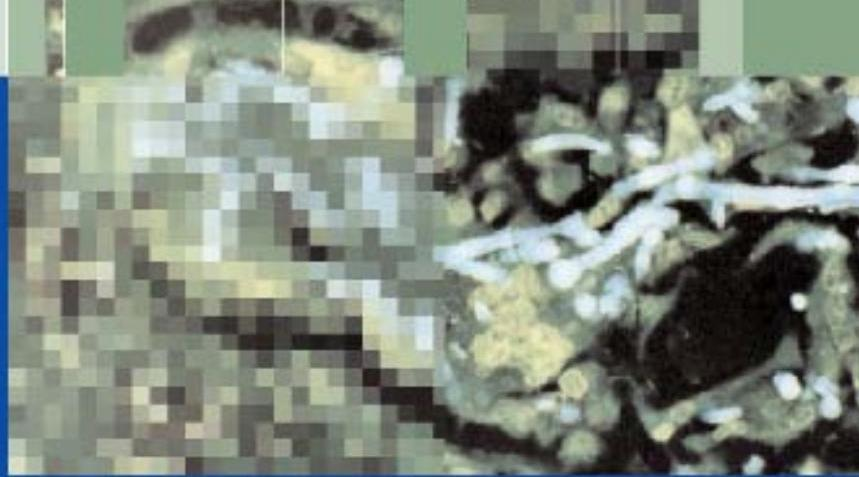

Front Matter: Pulmonary Arterial Hypertension and Interstitial Lung Diseases
Pulmonary Arterial Hypertension and Interstitial Lung Diseases
A Clinical Guide
Editors
Robert P. Baughman
University of Cincinnati,
Department of Internal Medicine
Cincinnati, OH
Roberto G. Carbone
Regional Hospital
Department of Internal Medicine
Aosta, Italy
Giovanni Bottino
Regional Hospital
Department of Internal Medicine
Aosta, Italy
Publication Information
ISBN: 978-1-58829-695-5
e-ISBN: 978-1-60327-074-8
DOI: 10.1007/978-1-60327-074-8
Library of Congress Control Number: 2008937495
© Humana Press, a part of Springer Science+Business Media, LLC 2009
All rights reserved. This work may not be translated or copied in whole or in part without the written permission of the publisher (Humana Press, c/o Springer Science+Business Media, LLC, 233 Spring Street, New York, NY 10013 USA), except for brief excerpts in connection with reviews or scholarly analysis. Use in connection with any form of information storage and retrieval, electronic adaptation, computer software, or by similar or dissimilar methodology now known or hereafter developed is forbidden.
The use in this publication of trade names, trademarks, service marks, and similar terms, even if they are not identified as such, is not to be taken as an expression of opinion as to whether or not they are subject to proprietary rights.
While the advice and information in this book are believed to be true and accurate at the date of going to press, neither the authors nor the editors nor the publisher can accept any legal responsibility for any errors or omissions that may be made. The publisher makes no warranty, express or implied, with respect to the material contained herein.
Printed on acid-free paper
springer.com
Dedication
wife Elise Lower,
in Memory of mother Attilia Innesti Carbone
wife Elena Bottino
Preface
Interstitial lung disease (ILD) is a broad category of lung diseases that includes more than 150 disorders characterized by scarring or fibrosis of the lungs. Even among the many types of the disease, ILD's progression can vary from person to person, and people respond differently to therapy. In the past, emphasis in treating ILDs has focused on the effect on gas exchange and loss of lung volume. This is a direct effect of the damage to the interstitium. However, an important indirect effect is on the pulmonary vasculature with resulting pulmonary hypertension. The association between interstitial lung disease and pulmonary hypertension has long been recognized, it was often associated with hypoxia and fibrosis alone. Recent studies that demonstrate response to pulmonary vasodilators stresses the vascular component of this process. In this book, we examine the various interstitial lung diseases. We also examine the incidence and outcome of pulmonary hypertension in the various interstitial diseases.
The book is divided into two main sections. The first discusses general issues. Drs. Carbone and Bottino introduce both ILD and associated pulmonary hypertension in the first two chapters of the book. The next chapter is by Drs. Meyer and Raghu, who discuss the evaluation of idiopathic interstitial lung diseases. They point out that this includes not only idiopathic pulmonary fibrosis, but other conditions such as nonspecific interstitial pneumonitis and cryptogenic organizing pneumonia. Drs. Moreira and Travis provide a detailed analysis of the pathology of the various ILDs. The pathologist often has the final say about what disease, although a comprehensive approach the clinician, radiologist, and pathologist gives a better definition of many cases. Finally, Drs. Carbone and Bottino summarize the evaluation of pulmonary hypertension. Although most of the information available is from patients with primary pulmonary hypertension, the observations can often be extended to patients with ILD.
The other section of the book deals with specific categories of disease. Dr. Lynch and colleagues discuss bronchiolitis, an increasingly recognized problem leading to airway obstruction and restriction. The use of inspiratory and expiratory high-resolution computed tomography scan has markedly enhanced the recognition of this process. Dr. Selman and his group then discuss hypersensitivity pneumonitis, a diffuse group of diseases bound together by common clinical and pathological features.
Drs. Brown and Strange discuss the collagen vascular diseases. Scleroderma has been one of the most widely studied lung diseases that can cause both interstitial lung process as well as pulmonary hypertension. In the past few years, large clinical trials have been published showing the benefits of some forms of therapy in these diseases. Dr. Martinez discusses the specific problem of pulmonary hypertension with idiopathic pulmonary fibrosis. Because idiopathic pulmonary fibrosis is associated with a high mortality, treatment for this complication may have major impact on the disease. Dr. Lee Newman examines the interstitial lung diseases associated with various occupational exposures. This divergent group can have a quite variable outcome. However, as a group it represents a major part of the differential diagnosis of all patients with interstitial lung diseases.
Dr. Baughman and colleagues discuss sarcoidosis. This multi organ disease affects the lungs in more than $90 \%$ of cases. Although most patients do well, there is a group with persistent pulmonary disease. Up to half of these patients will have pulmonary hypertension. Drs. Baughman, Lower, and Engel provide an evaluation for the disease and treatment strategies for the disease and associated pulmonary hypertension.
Finally, the editors would like to again to thank all the authors for their efforts in preparing this book. We would also like to thank Richard Lansing of Humana Press for his support.
Contents (from PDF)
Part I: General Principles
- 1 Interstitial Lung Disease: Introduction ..... 3
Roberto G. Carbone, Fabio Montanaro, and Giovanni Bottino
- 2 Pulmonary Hypertension in Interstitial Lung Disease ..... 13
Roberto G. Carbone, Assaf Monselise, and Giovanni Bottino
- 3 Idiopathic Pulmonary Fibrosis and Associated Pulmonary Hypertension: Genetics, Pathobiology, Diagnosis, and Management ..... 51
Keith C. Meyer and Ganesh Raghu
- 4 Lung Pathology ..... 71
Andre L. Moreira and William D. Travis
- 5 Primary Pulmonary Hypertension ..... 89
Roberto G. Carbone and Giovanni Bottino
Part II: Specific Lung Disorders
- 6 Bronchiolar Disorders ..... 111
Joseph P. Lynch, III, Rajeev Saggar, Robert D. Suh, and Michael C. Fishbein
- 7 Hypersensitivity Pneumonitis ..... 139
Moisés Selman, Guillermo Carrillo, Carmen Navarro, and Miguel Gaxiola
- 8 Connective Tissue Disease and Vasculitis-Associated Interstitial Lung Disease ..... 159
Alan N. Brown and Charlie Strange
- 9 Pulmonary Hypertension in Idiopathic Pulmonary Fibrosis ..... 177
Fernando J. Martinez
- 10 Occupational Interstitial Lung Disease Update ..... 195
Lee S. Newman
- 11 Sarcoidosis ..... 213
Robert P. Baughman, Elyse E. Lower, and Peter Engel
Index ..... 243
Contributors
Robert P. Baughman, MD
Professor of Medicine, Interstitial Lung Disease and Sarcoidosis Clinic, University of Cincinnati Medical Center, Department of Medicine, Cincinnati, OH
Giovanni Bottino, MD
Professor of Medicine, Dept. of Internal Medicine, Docent of Respiratory Diseases, DIMI-University of Genoa, Genoa, Italy
Alan N. Brown, MD
Associate Professor of Rheumatology and Immunology, Department of Medicine, Medical University of South Carolina, Charleston, SC
Roberto G. Carbone, MD, FCCP
Department of Internal Medicine, Respiratory Unit, Regional Hospital, Aosta, Italy; Consultant Physician of DIMI University of Genoa, Genoa, Italy, for Interstitial Lung Disease, Consultant Physician of University of Turin, Turin, Italy, for Asbestosis correlated with Mesothelioma, Aosta, Italy
Guillermo Carrillo, MD
Instituto Nacional de Enfermedades Respiratorias Ismael Cosío Villegas, México
Peter J. Engel, MD
Ohio Heart and Vascular Center, Cincinnati, OH
Michael C. Fishbein, MD
Department of Pathology and Laboratory Medicine, The David Geffen School of Medicine at UCLA, Los Angeles, CA
Miguel Gaxiola, MD
Instituto Nacional de Enfermedades Respiratorias Ismael Cosío Villegas, México
Elyse E. Lower, MD
Professor of Medicine, Interstitial Lung Disease and Sarcoidosis Clinic, University of Cincinnati Medical Center, Department of Medicine, Cincinnati, OH
Joseph P. Lynch, III, MD
Division of Pulmonary, Critical Care Medicine and Hospitalists, Department of Internal Medicine, The David Geffen School of Medicine at UCLA, Los Angeles, CA.
Fernando J. Martinez, MD, MS
Department of Internal Medicine, Division of Pulmonary & Critical Care Medicine, University of Michigan Health System, Ann Arbor, MI.
Keith C. Meyer, MD, MS, FACP, FCCP
Professor of Medicine, Medical Director of Lung Transplantation, Director, Interstitial Lung Disease Clinic, Assoc. Director, Adult Cystic Fibrosis Clinic, Section of Allergy, Pulmonary and Critical Care Medicine, Department of Medicine, University of Wisconsin School of Medicine and Public Health. Madison, WI.
Assaf Monselise, MD
Department of Internal Medicine, University of Tel Aviv, Tel Aviv, Israel
Fabio Montanaro, MB
Department of Epidemiology and Statistics University of Genoa, Genoa-Italy
Andre L. Moreira, MD, PhD
Department of Pathology, Memorial Sloan Kettering Cancer Center, NY, NY.
Carmen Navarro, MD
Instituto Nacional de Enfermedades Respiratorias Ismael Cosío Villegas, México
Lee S. Newman, MD, MA
Professor, Department of Preventive Medicine and Biometrics, Division of Allergy and Clinical Immunology and Division of Pulmonary Sciences and Critical Care Medicine, Department of Medicine, University of Colorado Denver, School of Medicine, Denver, CO.
Ganesh Raghu, MD, FCCP, FACP
Professor of Medicine & Lab Medicine (Adjunct), Division of Pulmonary & Critical Care Medicine, Director, Interstitial Lung Disease, Sarcoid and Pulmonary Fibrosis Program, Medical Director Lung Transplant Program, University of Washington. Seattle, WA.
Rajeev Saggar, MD
Division of Pulmonary, Critical Care Medicine, UC Irvine School of Medicine, Irvine, CA
Moisés Selman, MD
Instituto Nacional de Enfermedades Respiratorias Ismael Cosío Villegas, México
Charlie Strange, MD
Professor of Pulmonary and Critical Care Medicine, Department of Medicine, Medical University of South Carolina, Charleston, SC
Robert D. Suh, MD
Department of Radiology, The David Geffen School of Medicine at UCLA, Los Angeles, CA
William D. Travis, MD
Department of Pathology, Memorial Sloan Kettering Cancer Center, NY, NY
Abbreviations
| Abbreviation | Term |
|---|---|
| 6MWT | six minute walk test |
| ACCESS | A Case Control Etiologic Study of Sarcoidosis |
| ACCP | American College of Chest Physicians |
| AIP | acute interstitial lung disease |
| ALK1 | active/like kinase type/1 |
| ANCA | antineutrophil cytoplasmic antibody |
| ANP | atrial natriuretic peptide |
| APC | antigen-presenting cells |
| AR | acute rejection |
| ASD | atrial septal defect |
| ATS | American Thoracic Society |
| AVP ${ }_{1}$ | vasopressin receptor |
| BAL | broncho alveolar lavage |
| BCG | bronchocentric granulomatosis |
| BeLPT | beryllium lymphocyte proliferation test |
| BIP | bronchiolitis interstitial pneumonia |
| BMPR2 | bone morphogenetic protein receptor type-2 |
| BNP | brain natriuretic peptide |
| BOOP | bronchiolitis obliterans organizing pneumonia |
| CCB's | calcium channel blockers |
| CFA | cryptogenic fibrosing alveolitis (synonymous of IPF) |
| CMV | cytomegalovirus |
| COP | cryptogenic organizing pneumonia |
| CPI | composite physiologic index |
| CRP score | clinical radiological physiological score |
| CVD | collagen vascular disease |
| CXC | chemokine |
| DG | diacylglycerol |
| DIP | desquamitive interstitial pneumonia |
| Abbreviation | Term |
|---|---|
| DLco | diffusion capacity (of the lung) for carbon monoxide (CO) |
| DPI | Diphenyleneiodonium |
| ERS | European Respiratory Society |
| ET | endothelin |
| ETA | endothelin receptor |
| EVE | endogenous vascular elastase |
| FVC | forced vital capacity |
| FEV1 | Forced expiratory volume in one second |
| GIP | giant interstitial pneumonia |
| HHT | hereditary hemorrhagic telangiectasia |
| HPV | hypoxic pulmonary vasoconstriction |
| HSCT | HEMATOPOIETIC STEM CELL TRANSPLANTATION |
| IIP | idiopathic interstitial pneumonia |
| IL | interleukin |
| ILD | interstitial lung disease |
| IP | inositol phosphate |
| IP3 | inositol triphosphate |
| IPAH | idiopathic pulmonary arterial hypertension |
| IPF | idiopathic pulmonary fibrosis |
| ISHLT | INTERNATIONAL SOCIETY OF HEART LUNG TRANSPLANTATION |
| LIP | lymphoid interstitial pneumonia |
| LIGHT | Lymph toxin-like Inducible protein that competes with Glycoprotein D for Herpes virus entry mediator on T lymphocytes |
| LTR | lung transplant recipients |
| NO | nitric oxide |
| NSIP | non-specific interstitial pneumonia |
| NYHA | New York Heart Association class |
| Octreoscan | ${}^{111}$ In-DTPA-D-Phe1-Octreotide |
| ODTS | organic dust toxic syndrome |
| PAF | platelet activating factor |
| PAH | pulmonary arterial hypertension |
| PAP | pulmonary artery pressure |
| PAPm | mean pulmonary artery |
| PCW | pulmonary capillary wedge |
| Abbreviation | Term |
|---|---|
| PFT | pulmonary functional test |
| PGI2 | prostaglandin I2 |
| PH | pulmonary hypertension |
| PIP2 | inositol polyphospholipids |
| $\mathrm{P}_{\text{LA}}$ | left atrial pressure |
| PLC | phospholipase C |
| PMF | progressive massive fibrosis |
| PPH | primary pulmonary hypertension |
| PVOD | pulmonary veno-occlusive disease |
| PVR | pulmonary vascular resistance |
| RA | right atrial |
| RB/ILD | respiratory bronchiolitis-associated with interstitial lung disease |
| RIPID | Italian registry for diffuse infiltrative lung disorders |
| RV | right ventricular/ ventricle |
| RVH | right ventricular hypertrophy |
| RVSP | right ventricular systolic pressure |
| S6c | peptide named sarafotoxin |
| SACE | serum angiotensin converting enzyme |
| SFTPC | surfactant protein C gene SFTPC |
| SLE | systemic lupus erythematous |
| SMC | smooth muscle cells |
| SOD | Super oxide Dismutase |
| SPAM cells | pulmonary artery smooth muscle cells |
| sPAP | systolic pulmonary arterial pressure |
| SPECT | Single Photon Emission Computed Tomography |
| SPH | secondary pulmonary hypertension |
| SSc | systemic scleroderma |
| TBB | transbronchial biopsy |
| TGF/$\beta$ | transforming growth factor |
| TIE2 | endothelial-specific receptor of angiopoietin-1 |
| TNF | tumor necrosis factor |
| TR | tricuspid valve regurgitation |
| U.I. | uptake index |
| UIP | usual interstitial pneumonia |
| VEGF | Vascular endothelial growth factor |
| VF | ventricular fibrillation |
| V/Q | ventilation/perfusion |